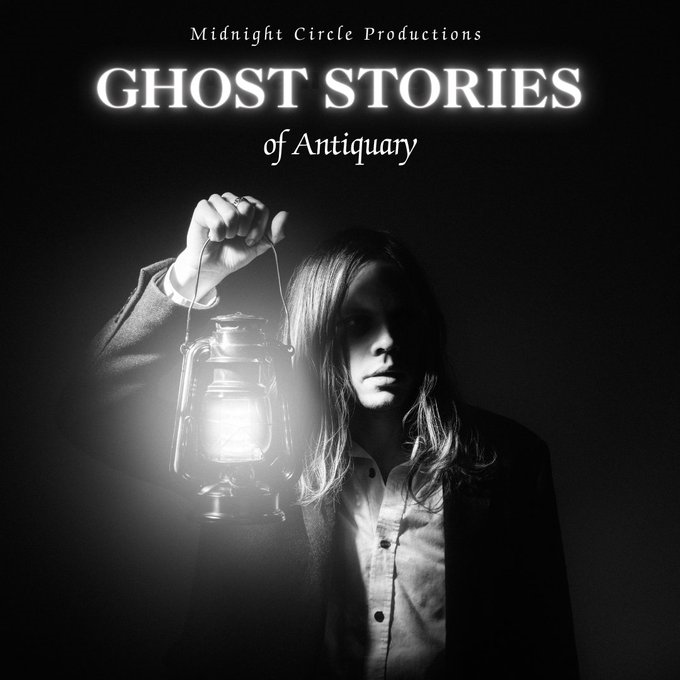

Ghost Stories of an Antiquary
It's the early 1940's London; as the bombs fall and the night draws in, our humble hall warden welcomes you to shelter against the oncoming storm. While the Blitz rages why not gather around the lantern and pass the time with a ghost story or two? Be warned though, in the darkest times not everything is as it seems. Perhaps there is more to our four storytellers than meets the eye?
“With the last breath of life, a ghost story begins”.
Inspired by a selection of M.R James Ghost Stories of an Antiquary:
- Oh, Whistle, and I'll Come to You, My Lad
- Lost Hearts
- The Ash-Tree
- The Mezzotint
The Offie and Broadway World nominated theatre company, Midnight Circle, are thrilled to invite you to their first show of 2024!